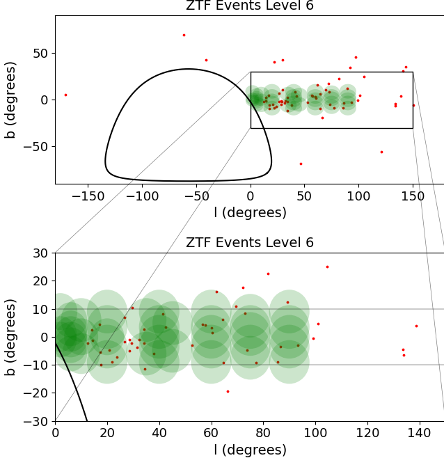
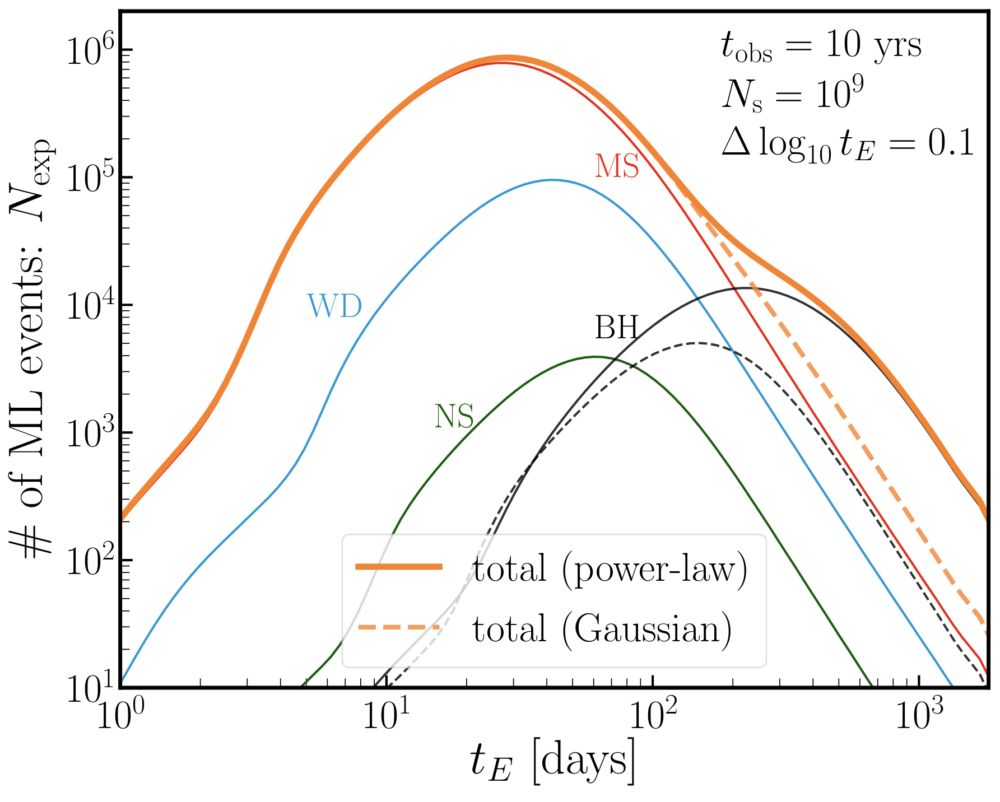
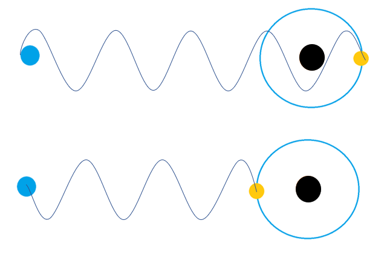

Binary Microlensing in PopSyCLE
Gravitational microlensing provides a unique opportunity to probe the mass distribution of stars, black holes, and other objects in the Milky Way Galaxy. Population simulations are necessary to interpret results from microlensing surveys. The contribution from binary objects is often neglected or minimized in these simulations despite the high percentage of binary systems and the potential microlensing holds to probe binaries. We are adding multiple systems to Population Synthesis for Compact-object Lensing Events (PopSyCLE), which is a microlensing population synthesis code used to simulate mock microlensing surveys in patches of the Milky Way Galaxy, to assess the impact of binary systems on interpreting microlensing survey results.
Microlensing with Vera C. Rubin
Microlensing in Zwicky Transient Facility
We conducted a multiyear search for microlensing events on the Zwicky Transient Facility (ZTF), an all-sky optical synoptic survey that observes the entire visible northern sky every few nights. We discovered 60 high-quality microlensing events in the 3 yrs of ZTF-I using the bulk lightcurves in the ZTF Public Data Release 5. 19 of our events are found outside of the Galactic plane (∣b∣ ≥ 10°), nearly doubling the number of previously discovered events in the stellar halo. We also record 1558 ongoing candidate events as potential microlensing that can continue to be observed by ZTF-II for identification. The scalable and computationally efficient methods developed in this work can be applied to future synoptic surveys, such as the Vera C. Rubin Observatory's Legacy Survey of Space and Time and the Nancy Grace Roman Space Telescope, as they attempt to find microlensing events in even larger and deeper data sets.
Imapct of Black Hole Mass Function on Microlensing
 We used a parametric Milky Way Galaxy model and an analytic integrated microlensing calculation to find the microlensing Einstein crossing time distribution to determine the power microlensing has to distinguish between black hole mass functions. We find that if BHs have a Salpeter-like mass function extended beyond 30M⊙ and a similar velocity and spatial structure to stars in the Galactic bulge and disk regions, the BH population is a dominant source of microlensing events at long timescales of the microlensing light curve ≳100 days.
Using the Light Travel Time Effect to search for Black Hole - Variable Star Binaries
The Light Travel Time Effect (LTTE) is a powerful tool to identify variable stars in binary systems and their unseen companions. The phase change in the light curve of a variable star due to the star’s orbital motion can be used to find the mass of its companion. We developed a phase detector, which fits temporal subsets of data to determine phase changes over time in order to identify occurrences of LTTE. The phase variation of two candidate RR Lyrae are analyzed: EL Hya, which was identified from Asteroid Terrestrial-impact Last Alert System (ATLAS) data, and AR Ser, which was the dimmest candidate binary identified by proper motion anomaly in Kervella et al. (2019a). Using data from ATLAS, All-Sky Automated Survey for Supernovae (ASAS-SN), the Catalina Sky Survey, and the Siding Spring Survey, we found that for both EL Hya and AR Ser the amplitude and period of their phase variation changes as a function of time. Hence, it is likely that both stars are impacted by the Blazhko effect, an internal phase variation in RR Lyrae, and it is unlikely that the phase change is caused by LTTE. If the variations are caused by binarity, EL Hya would be orbiting an object of at least 4.33 M⊙ and AR Ser would be orbiting one of at least 34.1 M⊙, which would likely be a black hole. Thus, LTTE offers the potential to discover variable stars in binaries with black holes.